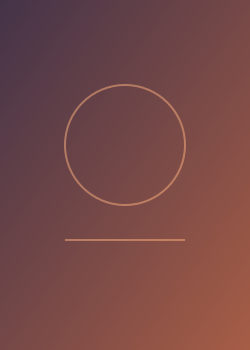

Каталог
Выбирайте, что посмотреть сегодня.
Все тайтлы
Подборка для демонстрации
Сегодня

Новая серия · Серия 2
Обновление демонстрационноеВчера
Добавлен вариант озвучки
Обновление демонстрационноеБиблиотека
Любимые истории и то, что вы смотрите.
Мои тайтлы
Демонстрационная библиотека
Сасаки и Пи 2
Здесь располагается описание тайтла, его история и сведения, которые помогают выбрать, что посмотреть. В прототипе текст приведён для примера.
Серии
Выберите серию для просмотра · пример
Параметры просмотра
Пример франшизы
Демонстрационная хронология, не сведения о выбранном тайтле.
Обновление каталога
Проверка источников и состояние сканера.
Обновить данные каталога
Проверка доступных серий и источников.
Установка сканера
Расширение для обновления каталога
Установите или обновите расширение, чтобы проверять источники.
Установка и обновление
Инструкция для расширения браузера.
Подготовьте расширение
Скачайте архив, откройте настройки расширений браузера и выберите папку сканера.
Администрирование
Сводка активности каталога.
Пользователи
Демонстрационные данные| Аккаунт | Активность | Серии | Время | Библиотека |
|---|---|---|---|---|
| Демо-пользователь | Сегодня | 8 | 2 ч 40 мин | 6 тайтлов |
| Демо-пользователь 2 | Вчера | 3 | 48 мин | 2 тайтла |
Anime Catalog
Вход через Google